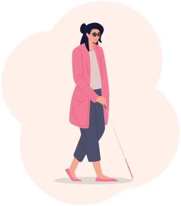
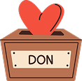
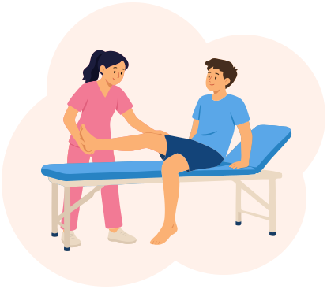

Et si, pendant quelques instants, vous deviez vivre votre quotidien dans l’obscurité la plus totale ?
Notre nouvelle campagne « Galères de nuit » vous invite à vivre une expérience immersive et profondément humaine pour changer de regard sur la cécité et la malvoyance.
Qui n’a jamais marché à tâtons dans le noir pour ne pas réveiller une maison qui dort ?
Et si cette réalité devenait votre quotidien, que feriez-vous ?
Ici, nous vous proposons de partager l’expérience de Delphine, 45 ans, comptable, devenue très malvoyante à la suite d’un accident de voiture. Tout bascule alors dans sa vie. Elle perd son emploi. En parallèle, la perte progressive de la vue lui fait perdre tous ses repères. Elle finit par s’isoler chez elle jusqu’à ce que son médecin lui parle de l’association Valentin Haüy.
Découvrez comment cette rencontre avec les équipes de l'association Valentin Haüy a changé sa vie !
Retrouver un lien
Lorsqu’elle pousse la porte de l’association, Delphine ne sait pas vraiment ce qu’elle vient chercher. Une assistante sociale l’écoute, la conseille et l’oriente. Delphine comprend qu’elle n’est plus seule et que des solutions existent, notamment pour faire valoir ses droits.
Retour au sommaire
Réapprendre à se déplacer
Après ce rendez-vous, Delphine se rend au comité Valentin Haüy près de chez elle et commence des cours de locomotion. Elle apprend à se déplacer avec une canne blanche, à se repérer et à mobiliser autrement ses perceptions. Au début, chaque déplacement demande une immense attention. Puis viennent les premiers trajets et la confiance. Et un jour, Delphine sort seule.

Grâce à votre soutien et à votre générosité, permettez à des dizaines de personnes comme Delphine, touchée par un handicap visuel, de retrouver leurs repères et d’apprendre à se déplacer en toute autonomie.
50 € = 1h de cours de locomotion
Je donneRetrouver les gestes du quotidien
Au comité Valentin Haüy, le quotidien de Delphine s’ouvre peu à peu à de nouvelles possibilités. Elle retrouve le plaisir de cuisiner, de lire, de sortir, de partager une balade ou une visite culturelle avec d’autres. Son monde, qui s’était rétréci, s’élargit de nouveau. Mais dans ce quotidien qu’elle reconquiert peu à peu, le numérique reste encore un obstacle.
Grâce à des cours d’informatique adaptée, elle apprend à utiliser autrement son ordinateur et son téléphone. Peu à peu, elle retrouve ses repères jusqu’à pouvoir acheter seule son billet de train. Bien plus qu’un billet, c’est la liberté de partir qu’elle retrouve.
En France, seulement 3 % des sites internet sont accessibles à tous.
Agissons ensemble pour faire avancer les choses et offrir aux personnes déficientes visuelles le droit à l’information.
Je signe la pétition
Retrouver un avenir professionnel
Delphine était comptable. Son accident et la perte de son emploi ont interrompu sa vie professionnelle, mais pas ses talents ni son envie d’avancer. Toujours accompagnée régulièrement par son assistante sociale, elle découvre le centre de formation Valentin Haüy (ESRP) et choisit une nouvelle voie : devenir kinésithérapeute pour inventer la suite.
Delphine n’a pas retrouvé sa vie d’avant. Elle a retrouvé le pouvoir de construire celle d’après.
Alors, ne nous arrêtons pas là. Continuons d’avancer aux côtés de Delphine et de toutes les personnes aveugles ou malvoyantes pour que chacune puisse continuer à construire sa vie en toute autonomie.